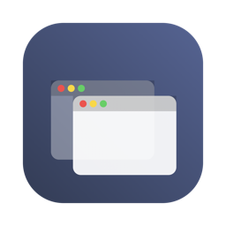

Annex
Give your coding agent its own Mac. A virtual Mac with its own screen, keyboard and browser, separate from yours, for every task that needs a website or an app.
Free. Apple silicon, macOS 27 or later, about 75 GB of free space.
Bring your own agent
Annex adds itself to your agent as an MCP server: Claude Code, Codex CLI, Gemini CLI, VS Code (Copilot), Cursor, Windsurf, opencode, or any agent that speaks MCP. Your agent opens the workspace, looks at the screen, clicks and types, and closes it when it's done.
You approve every time
Opening the workspace always needs your yes: in your agent, or on your Mac.Separate from your Mac
The workspace has none of your files, passwords or sign-ins. Files cross only through an exchange folder.Sign-ins expire
When the workspace closes, websites forget their sign-ins, except the few you choose to keep.No captcha solving
Your agent never types passwords or solves captchas. It asks you, and you do it in the workspace window.Set up in one go
- Open Annex and choose your agents.
- Annex downloads macOS from Apple and builds the workspace. No setup assistant.
- Switch on screen sharing in the workspace once (macOS only lets a person do that).
- Done. Ask your agent for something that needs a website.
Reach it from your phone
With Claude Code, Annex can keep a session running on your Mac that you reach from the Claude app on your phone (Remote Control). You approve opening the workspace right there.